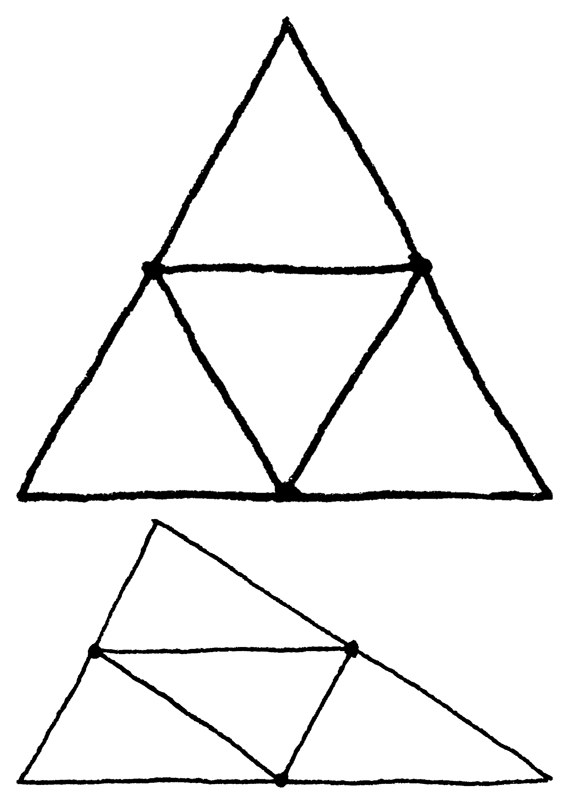
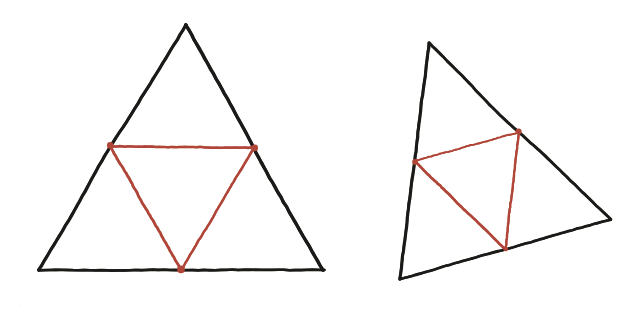

Aquests quatre triangles, són idèntics?

Què hem de demostrar
No n'hi ha prou a comprovar que dos dels quatre triangles petits coincideixen: cal un sol argument que valgui alhora per als quatre, sense haver-ne de tractar cap parell com a cas especial.
La mida de cada costat nou, sense mesurar res
Cada línia que subdivideix el triangle gran uneix els punts mitjans de dos dels seus costats. Aquest tipus de segment té una propietat coneguda —el teorema del segment mitjà—: és paral·lel al tercer costat del triangle i en fa exactament la meitat de llarg. Aplicant-ho als tres costats nous alhora, ja sabem la mida completa de tots els triangles petits sense mesurar-hi res directament: cadascun té per costats la meitat de cadascun dels tres costats del triangle gran.
Que no depengui de cap simetria
Perquè l'argument sigui realment general —i no un efecte casual de la simetria d'un triangle equilàter— cal comprovar-lo també en un triangle qualsevol, sense cap costat ni angle repetit. El mateix teorema del segment mitjà s'aplica exactament igual, costat per costat, sense necessitar cap propietat addicional del triangle de partida.

Tancar-ho amb el criteri costat-costat-costat
Aquí hi ha un pas que sembla innocent i no ho és, i val la pena fer-lo a poc a poc. Que els costats d'un triangle petit siguin la meitat dels del gran no el fa congruent amb el gran: el fa semblant, de raó 1/2. La congruència que busquem és una altra, i ja la tenim a la mà. Si els costats del triangle gran són a, b i c, cadascun dels quatre triangles petits té per costats exactament a/2, b/2 i c/2 — els mateixos tres números per a tots quatre. I tenir els tres costats iguals dos a dos és precisament el criteri costat-costat-costat (SSS): per tant els quatre triangles petits són congruents entre ells. Que a més siguin tots semblants al gran, de raó 1/2, és un fet diferent i complementari, no el mateix dit d'una altra manera.
Sí, els quatre triangles són idèntics: el teorema del segment mitjà garanteix que tots quatre tenen els mateixos tres costats —a/2, b/2 i c/2, la meitat dels del triangle gran— i el criteri costat-costat-costat en tanca la congruència entre ells. Respecte del triangle gran, en canvi, no són congruents sinó semblants, de raó 1/2.
Comprovació
Amb un triangle de costats 6, 8 i 10: cada triangle petit té costats 3, 4 i 5 —i per tant és rectangle (3²+4²=5²). El gran també ho és (6²+8²=10²), i no podria ser d'una altra manera: els petits en són còpies a escala 1/2, i canviar l'escala no canvia cap angle.